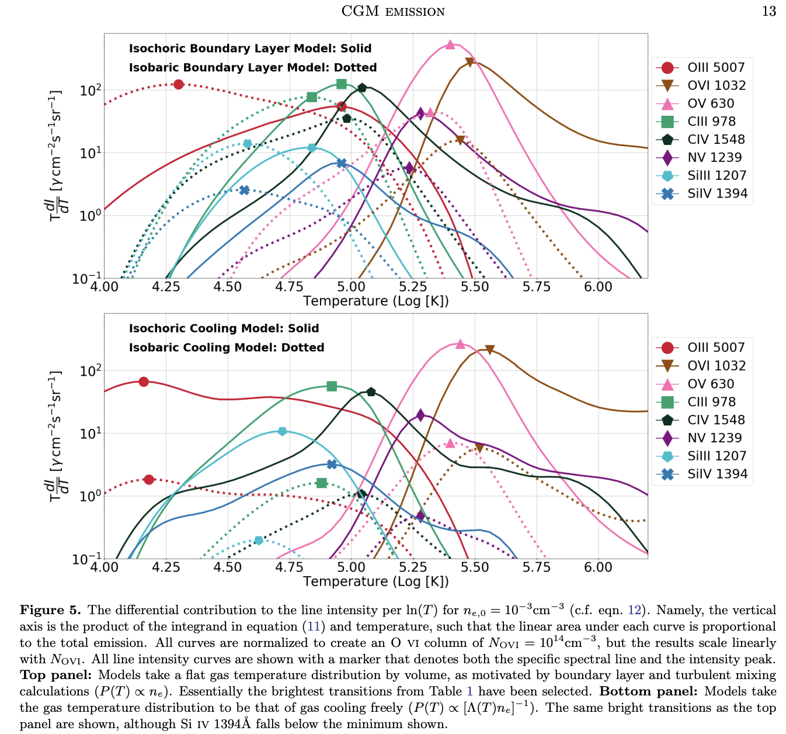

Daniel R. Piacitelli
Ph.D. Candidate at Rutgers University
NASA ADS

Dwarf galaxies are uniquely sensitive to energetic feedback processes, given their shallow potential wells. Feedback mechanisms, such as supernovae (SNe), can eject metal-enriched material out of the galaxy and into the circumgalactic medium (CGM) or even beyond the halo entirely. Thus, the CGM around dwarf galaxies and its metal content is likely to be a powerful tool in further understanding the evolution of low-mass galaxies and improving SN feedback models. span> However, there is a limited pool of both observations and pertinent theoretical work analyzing the CGM around dwarf galaxies. To address this gap in current research, I utilize a sample of $\approx 50$ isolated simulated dwarf galaxies from the high-resolution, fully-cosmological Marvel-ous Dwarfs (Munshi et al. 2021) and Marvellous Merians simulations. I will show results assessing the agreement between synthetic column densities and observed values as well as investigating the metal content of the CGM around the simulated dwarf galaxies. Leveraging these conclusions, we will advance our understanding of how the CGM of dwarf galaxies can be used to better model low-mass halos and inform us of their evolution. In addition, this work provides theoretical benchmarks for future observations targeting the CGM around dwarf galaxies.
Piacitelli, D. , Solhaug, E., Faerman, Y., & Mcquinn, M. “Absorption-based Circumgalactic Medium Line Emission Estimates” (MNRAS 2023)
By determining the expected emissivity of the CGM in various ultraviolet and optical spectral lines, I sought to inform predictions for proposed observational instruments, such as the UV-sensitive imager Maratus, and observational programs on instruments like the ground-based spectrograph Keck Cosmic Web Imager (KCWI). First, I compiled atomic data, like collision strengths and fractions of spontaneous transitions, from databases such as CHIANTI (Del Zanna et al. 2021). I then built a Python function that calculates a spectral line’s estimated intensity (see figure below) using these atomic values, an ion’s fractional abundance generated by the spectral synthesis code, Cloudy version c17.02 (Ferland et al. 2017), and a model of the CGM’s temperature and density distribution. I found the emission lines [O III] 5007 Å and [N II] 6583 Å, while faint, may be within detection limits of KCWI, and O VI 1032, 1038 Å would be detectable with a 1-meter space telescope. In addition to being feasibly detected, measuring these lines would provide insightful constraints on the density and thermal state of the CGM.
Faerman, Y., Piacitelli, D. , & Mcquinn, M. “...” (2024)
We aimed to better understand the effect of temperature and density variations along a sightline on the gas properties inferred from observations. This research is pertinent for CGM research as models for photoionization are used to translate ion column densities measured from absorption lines to the density and ionization state of the absorbing gas. While these models have greatly informed our perspective of the CGM, they often rely on assuming the absorbing gas exists at a single temperature and density, which does not account for the effects of turbulent or mixing gas. Thus, more realistic photoionization models are required to better constrain CGM properties. For this project, I used models of gas density and temperature to explore physical scenarios likely to be present in the CGM, for instance, gas that is mixing, turbulent, or cooling. I then used Cloudy to calculate the ion abundances for each scenario and compared our results to observations to understand the effect of these distributions.
Butsky, I., Werk, J., Tchernyshyov, K., Fielding, D., Breneman, J., Piacitelli, D. , Quinn, T., Sanchez, N., Cruz, A., Hummels, C., et al., “The Impact of Cosmic Rays on the Kinematics of the Circumgalactic Medium,” (ApJ 2022)
I utilized novel synthetic spectroscopy techniquesto determine column densities and velocity distributions of various ions within the Patient0 galaxy simulation and a second Patient0 iteration with CR physics implemented. Extracting this data using Python-based, observer-developed Voigt profile fitting tools (linetools, pyigm, veeper), I was able to directly compare spectral line properties in our simulation to observations in the COS-Halos survey. With this approach, we demonstrated the implementation of CRs produced O VI and Si III kinematic structures and absorption feature widths in better agreement with observations.
I am interested in researching how to use simulations to better understand the circumgalactic medium (CGM) and the processes that govern the galactic baryon cycle. Currently, I am a graduate student at Rutgers University working with Professor Alyson Brooks investigating the CGM around dwarf galaxies in the MARVEL-ous Dwarfs and the Marvelous Merians simulations. My long-term goals are to become an astronomy professor researching extragalactic astronomy and prioritizing inclusive STEM education. Here is a link to my CV . I received my B.S. in Astronomy and Physics, with a minor in Applied Mathematics from the University of Washington in 2022. During my time at the University of Washington, I contributed to multiple theoretical research projects studying the CGM. From investigating how the implementation of comsic ray physics affects the kinematics of the CGM around Milky Way-like galaxies to drawing predictions for the most promising CGM emission lines to inform future observational programs on ground-based integral field units and proposed ultraviolet-sensitive space telescopes and working to better understand the effect of temperature and density variations along a sightline on the gas properties inferred from observations, I developed a strong passion for expanding our theoretical understanding of the CGM, that I have continued to pursue and nuture at Rutgers.
Beyond of research, I am passionate about Diversity, Equity, and Inclusion (D.E.I) efforts and mentoring. At the University of Washington (UW), I volunteered as an Undergraduate Research Leader and worked to motivate my peers across disciplines to participate in research, along with helping facilitate the UW Undergraduate Research Symposium. I also led the Physical Sciences Curriculum team within Synbio for Everyone—a UW-student organization aiming to improve accessibility and reduce equity gaps in STEM education. Moving forward, I hope to incorporate D.E.I work in each stage of my academic journey, which I have done thus far at Rutgers University as the current treasurer of the organization Rutgers University Minorities in Physics and Astronomy and through public outreach events. I am also an active Rutgers Honors College Graduate Student Mentor.